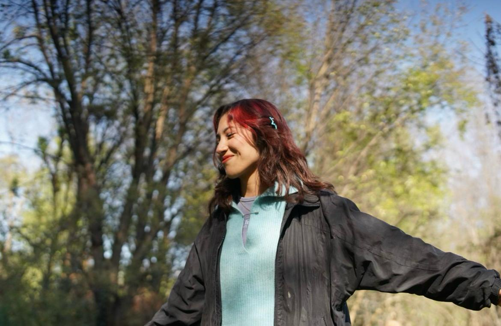

Me gusta mucho la fotografía y experimentar con elementos fuera de lo común.
Mis proyectos y tabajos se basan en los aprendizajes y retroalimentación que he adquirido en mi estancia en la universidad,
y explorar más sobre mi creatividad y demás, me ha impulsado a dar a conocer mis obras.
He tenido la oportunidad de ser una de las organizadoras de un Festival hecho por los alumnos en
la universidad.Proyecto que surgió gracias a nuestra curiosidad por saber el como sería organizar
algo así de grande.
mas